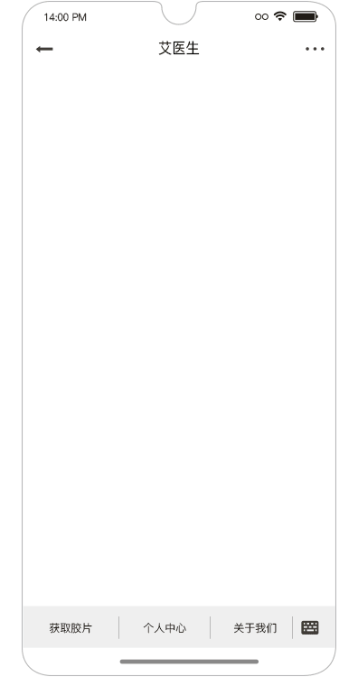

第一章:背景介绍及AI医生架构
1.1 背景介绍¶
学习目标： * 了解智能对话系统的相关背景知识。 * 掌握使用Unit对话API。
1 什么是智能对话系统？¶
- 随着人工智能技术的发展，聊天机器人，语音助手等应用在生活中随处可见，比如百度的小度，阿里的小蜜，微软的小冰等等。 其目的在于通过人工智能技术让机器像人类一样能够进行智能回复，解决现实中的各种问题。

-
从处理问题的角度来区分，智能对话系统可分为：
- 任务导向型：完成具有明确指向性的任务，比如预定酒店咨询， 在线问诊等等。
- 非任务导向型：没有明确目的，比如算算术，播放音乐，回答问题。
-
我们的在线医生项目就是任务导向型的智能对话系统。
1.2 在线医生的总体架构¶
- 学习目标：
-
了解在线医生项目的总体架构
-
项目整体架构图：

-
架构图分析，整个项目分为：在线部分和离线部分
- 在线部分包括：werobot服务模块，主要逻辑服务模块，句子相关模型服务模块，会话管理模块(redis), 图数据库模块以及规则对话/Unit模块。
- 离线部分包括：结构与非结构化数据采集模块，NER模型使用模块，以及实体审核模型使用模块。
- 在线部分数据流：从用户请求开始，通过werobot服务，在werobot服务内部请求主服务，在主服务中将调用会话管理数据库redis, 调用句子相关模型服务，以及调用图数据库，最后将查询结果输送给对话规则模版或者使用Unit对话API回复。
- 离线部分数据流：从数据采集开始，将获得结构化和非结构化的数据，对于结构化数据将直接使用实体审核模型进行审核，然后写入图数据库; 对于非结构化数据，将使用NER模型进行实体抽取，然后通过实体审核后再写入图数据库。
1.3 小结¶
-
学习了智能对话系统的相关背景知识：
- 什么是智能对话系统
- 从处理问题的目的来区分，智能对话系统的分类
-
我们的在线医生项目就是任务导向型的智能对话系统。
-
学习了架构图分析：
-
整个项目分为：在线部分和离线部分
- 在线部分包括：werobot服务模块，主要逻辑服务模块，句子相关模型服务模块，会话管理模块(redis), 图数据库模块以及规则对话/Unit模块。
- 离线部分包括：结构与非结构化数据采集模块，NER模型使用模块，以及实体审核模型使用模块。